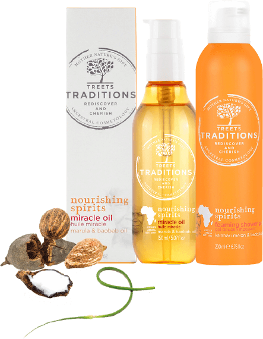

<!DOCTYPE html>
<html>
  <head>
    <meta charset="utf-8">
    <meta name="viewport" content="width=768">
    <link rel="stylesheet" href="css/fonts.css">
    <!-- <link rel="stylesheet" href="css/animate.min.css"> -->
    <link rel="stylesheet" href="css/style.css">
  </head>
  <body>
    <div class="t-wrapper">
      <div class="t-container">
        <div class="t-intro">
          <div class="t-intro__line flex">
          <div class="t-intro__marks flex">
            <div class="t-marks-line1">
            
            </div>
            <div class="t-marks-line2 flex">
              
              
            </div>
          </div>
          <div class="t-intro__title">
            <h2 class="t-title"></h2>
            <p class="t-text">С Новым годом всегда так: ждешь его с нетерпением, а приходит он всегда неожиданно. Как привести себя в порядок, если до праздника остались считанные дни? Мы узнали секретные бьюти-приемы женщин из разных <span>уголков земли и попытались воспроизвести их с помощью новой натуральной</span> косметики от голландского бренда Treets Traditions.
            </p>
          </div>
          </div>
          <div class="t-intro__products flex">
            <div class="t-products-line1 flex">
              <a href="" class="t-products-item">
                
                <p class="t-products-item__link t-blue">Revitalising Ceremonies »</p>
              </a>
              <a href="" class="t-products-item">
                
                <p class="t-products-item__link t-violet">Healing in Harmony »</p>
              </a>
            </div>
            <div class="t-products-line2 flex">
              <a href="" class="t-products-item">
                
                <p class="t-products-item__link t-sea">Energising secrets »</p>
              </a>
              <a href="" class="t-products-item">
                
                <p class="t-products-item__link t-orange">Nourishing Spirits »</p>
              </a>
              <a href="" class="t-products-item">
                
                <p class="t-products-item__link t-pink">Relaxing Chakra’s »</p>
              </a>
            </div>
          </div>
        </div>

        <div class="t-main">

          <div class="t-block -first">
            <div class="t-block-right">
            <div class="t-block__title">
              <h2 class="t-title"></h2>
            </div>
            <div class="t-block__content flex">
              <div class="t-info t-sea">
                <p>31 декабря бразильские девушки усиленно загорают: Новый год в Бразилии принято встречать в белом</p>
              </div>
              <div class="t-text">
                <span class="t-first-letter"></span>
                <span class="t-hidden">У</span>

                <span class="t-margin-left">девушек из Бразилии, Чили, Перу и Аргентины свои представления о прекрасном.
                <span class="t-sea t-mark">Ярко</span>, <span class="t-sea t-mark">броско</span>, <span class="t-sea t-mark">заметно</span>,
                — вот главные критерии</span> красоты на континенте. Поэтому
                макияж здесь на пару тонов ярче, чем в Европе. Помада — ярко-красная, ресницы
                — накладные, а брови густые и черные. Чтобы праздничный макияж ложился лучше,
                накануне Нового года девушки делают пилинг с морским песком. В Бразилии это и
                вовсе фирменная процедура: <span class="t-sea t-mark">30 декабря</span> на пляже
                <span class="t-sea t-mark">Рио-де-Жанейро</span> можно увидеть десятки
                 девушек, натирающих лицо и тело мелким, как мука, влажным песком. После этого в
                 ход идет масло: одно из любимых у бразильянок — <span class="t-sea t-mark">тамановое</span>.

                 <span class="t-margin-top">Его получают из плодов
                  невысокого дерева Таману, растущего по берегам Амазонки. <span class="t-sea t-mark">Тамановое масло</span> обладает
                   противовоспалительными, болеутоляющими, антибактериальными, противогрибковыми и
                    противовирусными свойствами, а кроме того, великолепно увлажняет кожу после чистки
                     и загара. Чтобы сохранить бодрое настроение до самого утра, девушки из Бразилии
                      налегают на <span class="t-sea t-mark">кофе</span>, а аргентинки всю ночь не выпускают из рук <span class="t-sea t-mark">калабас</span>. В этой
                      чаше, которую делают из сушеных плодов тыквы, жители Аргентины заваривают свой
                      главный национальный напиток — мате. Он бодрит не хуже кофе, к тому же улучшает
                       цвет лица, укрепляет иммунитет и память. У перуанок свой рецепт, позаимствованный
                        у древних инков. Перед ответственными походами они натирали тело <span class="t-sea t-mark">маслом
                        инка-инчи</span>. Это дерево произрастает только в Перу, а масло его семян —
                        кладезь полезных веществ. Оно расслабляет мышцы, увлажняет, улучшает обмен
                         веществ и насыщает кожу кислородом. Коме того, инка-инчи содержит рекордное
                          количество <span class="t-sea t-mark">Омега- кислот (92%!)</span>, поэтому маска для лица на его основе у
                          перуанок — обязательный пункт предновогодней программы.</span>

              </div>
            </div>
            </div>
            <div class="t-block__product">
              <div class="t-product flex">
                <div class="t-line"></div>
                
                <h2 class="t-product-title"></h2>
              </div>

              <div class="t-product-desc t-sea">
              <p>
                Экстракт маракуйи, масла таману и инка-инчи легли в основу скраба, крема и других средств для тела из линейки Energising secrets новой натуральной марки Treets Traditions. Богатое витаминами А и С масло маракуйи поддерживает здоровый баланс кожи, а богатые ненасыщенными жирными кислотами масла смягчают и увлажняют кожу, — в период холодов ей это просто необходимо.
              </p>
              <div class="t-more"><a href="" class="t-link"><span>узнать больше</span></a></div>
            </div>
            </div>
          </div>

          <div class="t-block -second">
            <div class="t-block-left">
            <div class="t-block__title">
              <h2 class="t-title"></h2>
            </div>
            <div class="t-block__content flex">
              <div class="t-text">
                <span class="t-first-letter"></span>
                <span class="t-hidden">П</span>
                <span class="t-margin-left">еред Новым годом все внимание
                  жительниц <span class="t-orange t-mark">Африки</span> сосредоточено
                  на коррекции фигуры.</span> В клиниках
                  Йоханнесбурга самыми популярными процедурами в это время становятся
                   всевозможные обертывания и lpg-массаж. Кстати, идеальная
                   фигура афро-девушки далека от канонов 90-60-90. Не грудь
                   и талия, а крупные бедра здесь — главный критерий красоты.
                   По мнению антропологов, акцент на бедра связан с племенными
                   обычаями носить ребенка за спиной. При ходьбе женщина прогибалась
                    в пояснице, чуть отставляя бедра назад, — отсюда внимание к этой
                    области. <span class="t-margin-top">Помимо коррекции фигуры, важным этапом подготовки к празднику
                     является <span class="t-orange t-mark">уход за волосами</span>. Большинство женщин региона в течение всего
                      года носят афрокосички: для волос это серьезная нагрузка. Чтобы
                      восстановить здоровье локонов, девушки делают <span class="t-orange t-mark">маски с маруловым
                       маслом</span>: оно настолько легкое и невесомое, что напоминает воду
                       и совершенно не утяжеляет волосы. Наконец, последний пункт
                       предновогоднего бьюти-марафона – <span class="t-orange t-mark">уход за лицом</span>. Любимая
                       процедура африканок — <span class="t-orange t-mark">маска из плодов баобаба</span>. Баобаб — вообще
                       главный местный фаворит. Масло его плодов мажут на хлеб и на лицо,
                       им заживляют раны и лечат детей от простуды. Что не удивительно:
                       ведь в его плодах больше <span class="t-orange t-mark">витамина С</span>, чем в апельсинах, больше <span class="t-orange t-mark">железа</span>,
                       чем в красном мясе, и больше <span class="t-orange t-mark">кальция</span>, чем в молоке.</span>

              </div>
              <div class="t-info t-orange">
                <p>Африканский новогодний дресс-код включает множество браслетов, в том числе на шее и на ногах</p>
              </div>
            </div>
            </div>
            <div class="t-block__product">
              <div class="t-product flex">
                <div class="t-line"></div>
                <h2 class="t-product-title"></h2>
                
              </div>

              <div class="t-product-desc t-orange">
              <p>
                Комбинация масел и экстрактов баобаба, семян дыни из пустыни Калахари, маруловое и масло каритэ увлажняют кожу, способствуют повышению эластичности и упругости. Изюминка коллекции — масло для тела, специально разработанное для самой сухой кожи: оно не только прекрасно увлажняет, но и быстро впитывается.
              </p>
              <div class="t-more"><a href="" class="t-link"><span>узнать больше</span></a></div>
            </div>
            </div>
          </div>


        </div>

      </div>
    </div>


    <!-- <script src="js/jquery-3.1.1.min.js"></script>
    <script src="js/shapes-polyfill.js"></script>
    <script src="js/wow.min.js"></script>
    <script>new WOW().init();</script>
    <script src="js/main.js"></script> -->
  </body>
</html>
